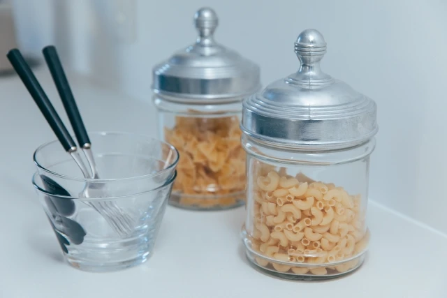

Kitchen Essay
自炊とは、暮らしを豊かにする技術。
冷蔵庫の中から、暮らしを組み立てる話。

自炊というと、よく「節約になる」と言われます。
たしかに、それは間違っていません。
外食やコンビニで済ませるより、家で作った方が安く済むことは多いです。
でも、わたしは自炊を「安く済ませるための我慢」だとは思っていません。
むしろ、自分の生活を自分で少し面白くするための技術だと思っています。
たとえば、わたしはキムチを買うと、まずビビンバに使います。
次は、豚肉や卵と一緒に炒めてキムチチャーハンにします。
それでも残ったら、豆腐や野菜を足してキムチ鍋にします。
さらに次の日は、その鍋にうどんを入れます。
最後は、残った汁にごはんを入れて、チーズを足してリゾットのようにします。
気づけば、ひとつのキムチから何食分ものごはんができています。
焦げないメモ
自炊は、材料を使い切るゲームでもあります。
残りものを「余り」ではなく、次の料理の入口として見ると、台所は少し楽しくなります。
同じ食材でも、少し考え方を変えるだけで、何度も違う楽しみ方ができます。
これは、ただ食費を浮かせるための工夫ではありません。
冷蔵庫の中にあるものを見て、「今日はこれで何を作ろう」と考えること。
残ったものを、仕方なく食べるのではなく、次の楽しみに変えること。
そういう小さな判断を重ねていくと、生活がただの消費ではなく、自分で組み立てるものになっていきます。
限られた材料の中で、どれだけ違う形の料理を生み出せるか。
それを考える時間は、わたしにとっての「暮らしのアルゴリズム」でもあります。
自炊のよさは、安いことだけではありません。
自分の手で、自分の暮らしを少し良くできること。
それが、わたしにとっての自炊の面白さです。